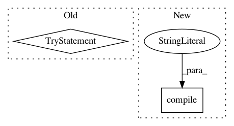

b0e2dcf03895421b651ee286ddf244addec7e9c5,src/sos/executor_utils.py,,prepare_env,#Any#Any#,128
Before Change
def prepare_env(global_def="", extra_dict={}):
// initial values
env.sos_dict.set("SOS_VERSION", __version__)
try:
// global def could fail due to execution on remote host...
// we also execute global_def way before others and allows variables set by
// global_def be overwritten by other passed variables
//
// note that we do not handle parameter in tasks because values should already be
// in sos_task dictionary
gd = strip_param_defs(global_def)
env.sos_dict.quick_update(extra_dict)
SoS_exec("""\
import os, sys
from sos.runtime import *
""" + gd)
except Exception as e:
env.logger.warning(
f"Failed to execute global definition {short_repr(gd)}: {e}")
def statementMD5(stmts):
def _get_tokens(statement):
return [x[1] for x in generate_tokens(StringIO(statement).readline) if x[1] not in ("", "\n")]
After Change
env.sos_dict.clear()
if gdef:
exec(compile(gdef, filename="<ast>", mode="exec"),
env.sos_dict._dict)
env.sos_dict.quick_update(gvars)
In pattern: SUPERPATTERN
Frequency: 3
Non-data size: 2
Instances
Project Name: vatlab/SoS
Commit Name: b0e2dcf03895421b651ee286ddf244addec7e9c5
Time: 2019-02-25
Author: ben.bog@gmail.com
File Name: src/sos/executor_utils.py
Class Name:
Method Name: prepare_env
Project Name: pyinstaller/pyinstaller
Commit Name: 9595af8e4f8779735d581af067ea213e27376679
Time: 2015-06-01
Author: h.goebel@crazy-compilers.com
File Name: PyInstaller/lib/modulegraph/modulegraph.py
Class Name: ModuleGraph
Method Name: run_script
Project Name: biotite-dev/biotite
Commit Name: 27d331c946cd8dc45d63b37be2dfe0e5cf342f50
Time: 2020-02-20
Author: patrick.kunzm@gmail.com
File Name: src/biotite/sequence/graphics/plasmid.py
Class Name:
Method Name: